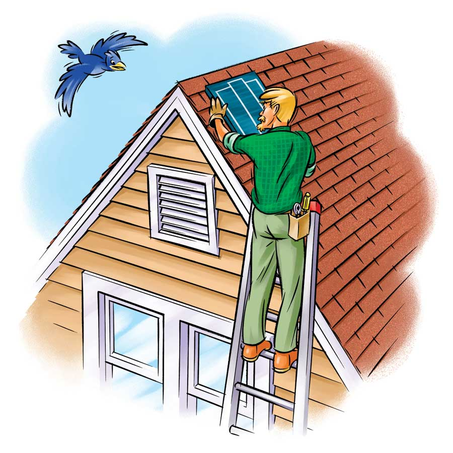
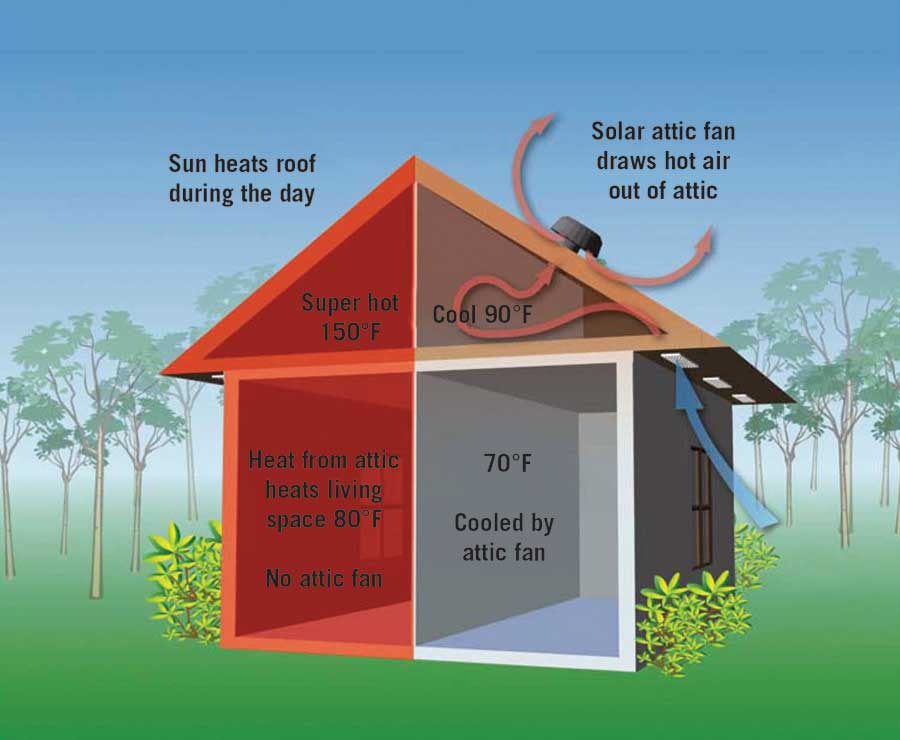

Attic fans reduce heat buildup in attics by removing warm air through openings (attic vents) typically located on the gable ends or on the roof of the house. The air that’s vented from the attic is replaced by cooler outside air drawn in through soffit vents (openings on the underside of the eaves). Reducing air temperature in the attic reduces heat gain through the ceiling below - that’s the theory, at least. The effectiveness of attic fans (including solar models) in reducing air conditioning costs is somewhat controversial. Some experts say that blowing air out of the attic may actually draw cool air out of the living area through cracks in the attic floor. If you install an attic fan, be sure all air leaks to the space below the attic are sealed.
If you are an experienced do-it-yourselfer with electrical and carpentry skills (for example, running wire and cutting and flashing holes in the walls or roof of your home), you can tackle this job yourself.
Before you buy a solar attic fan, measure your attic carefully and check with the manufacturer’s specifications to be sure the fan you’re considering will be sufficient. Homes with large attics may need at least two attic fans.
Solar attic fans are much easier to install than conventional electric attic fans because you don’t have to run electrical wires. These are typically mounted in the roof and powered by a built-in 10- to 20-watt solar-electric module (panel). The module generates direct current (DC) electricity to run the fan.
To install a solar attic fan, cut an opening in your roof from the outside, according to the fan manufacturer’s specifications, and mount the fan with flashing to prevent leakage. Working on a roof, especially a steeply pitched one, can be dangerous. And correct installation of flashing is crucial to prevent roof leaks.
Remember that attic fans require openings to draw outside air into the attic to replace the hot air they’re purging. Vents are usually located under the eaves (overhangs). A gable-end opening may also suffice. When in doubt, consult a professional contractor and check the manufacturer’s requirements.
To operate effectively, the solar-electric module should be in a sunny area so that it is either not shaded at all, or shaded for only a small amount of time during the day.
When installing a solar attic fan, do not cut structural framing members. Measure two or three times to be certain you’re cutting the right spot. Be careful when climbing ladders and working on roofs, too.
While most solar attic fans are integrated units, at least one manufacturer, Solatube, makes a model that can be mounted in a louvered gable-end opening just as a conventional attic fan. The solar-electric module is not part of the fan, as in the roof-mounted solar attic fan. It’s mounted separately on the roof in a sunny location. Wires from the solar-electric module connect to the fan in the attic.
When working in an attic, be sure to stand on ceiling joists so you won’t step through the drywall ceiling below. You may want to lay a piece of plywood over the joists to serve as a work platform.
To learn more about cooling your home with fans, see Simple Ways to Cool Your Home and Save Big.
|
 KEITH WARD Some solar attic fans exhaust hot attic air out through the gable-end vent. The photovoltaic panel that powers the fan is on the roof. |
 ANIL RAO/RS MEANS If outside temperatures are in the 90- to 110-degree range, the attic temperature can climb to 150 degrees. Even 105-degree outside air, when circulated through a 140-degree attic, will lower the temperature. |
|